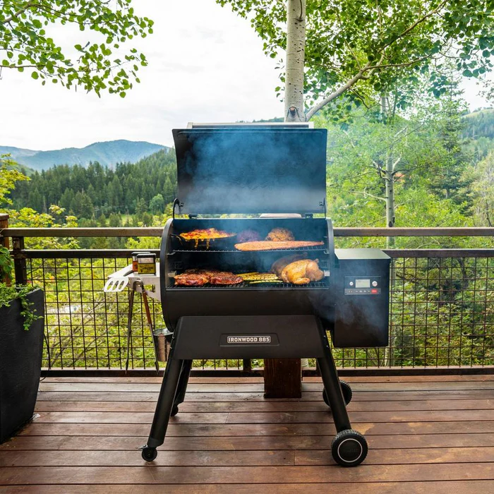

Hobbies
Hey, thanks for visiting my hobby page. I
just thought it would be cool for you to get to know me a bit, and
what better way then seeing some of the stuff i'm into.

I can almost gurantee you will find me bbq'n
at least 3-5 times a week. I love being on the pit and cooking/smoking for family,friends and of course my self.

People who know me best can tell you I love Mustangs. Very soon, I'll be buying one and working on fixing it up.
I played a lot of football growing up and all the way in college. I think, after that I fell in love with golf because
It was just different and required me to learn and grow out of football.